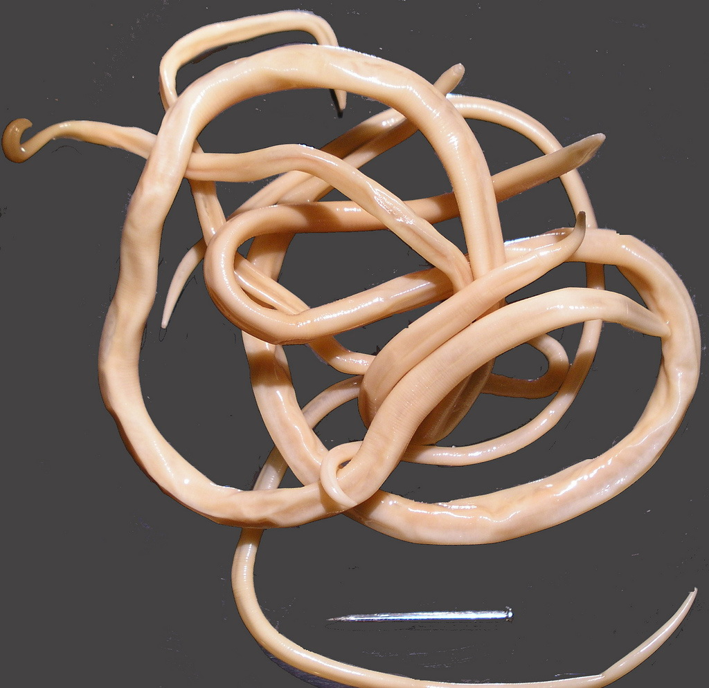
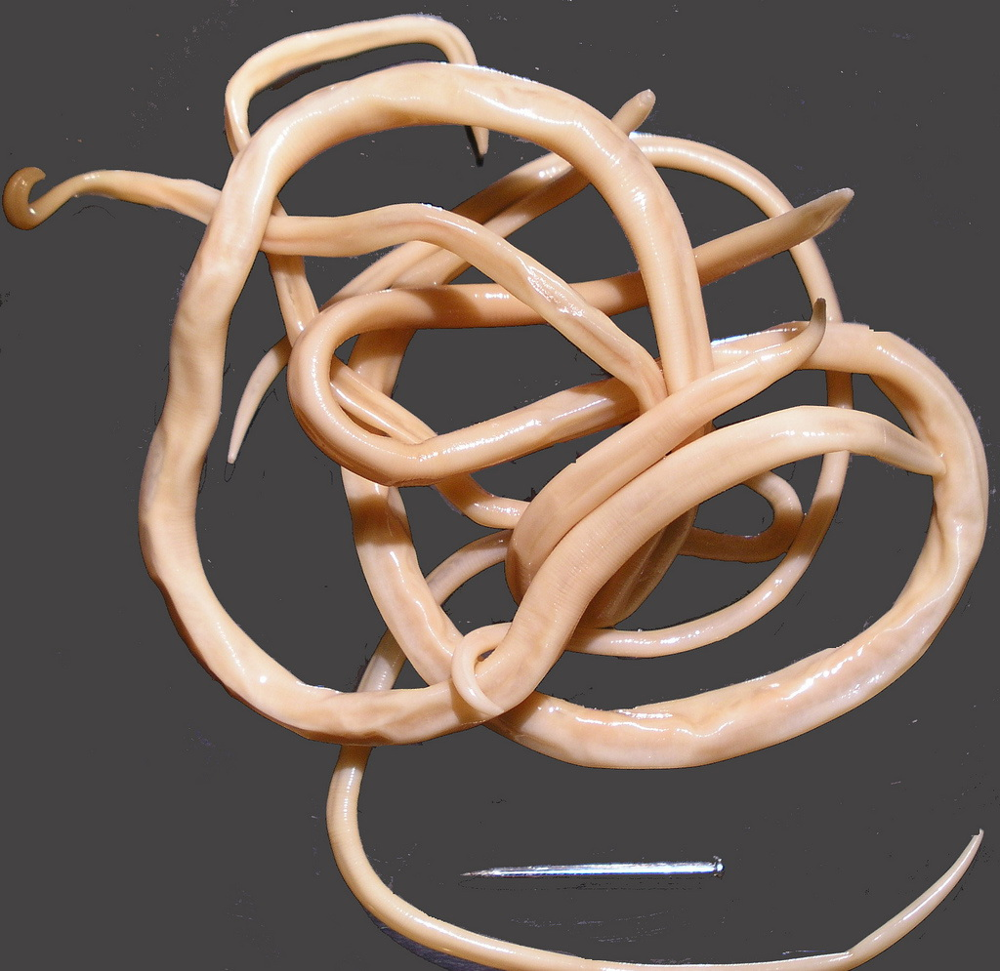
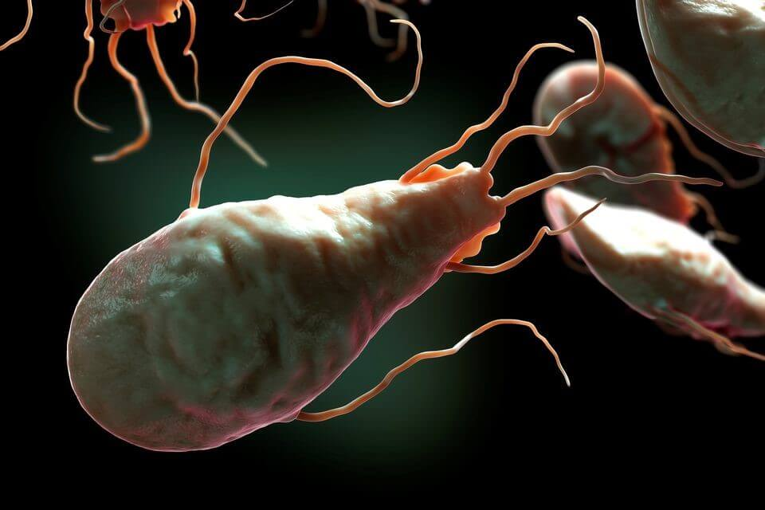

80% от всички заболявания са причинени от паразитни инфекции. Как да не станем храна за хелминтите?

«Заразяването с паразити води до появата на цял спектър от заболявания: диабет, хипертония, различни видове рак, безплодие и много други. Причината е, че продуктите от жизнената дейност на паразитите съдържат токсини, които причиняват имунна недостатъчност» – съобщиха говорителите от Световната здравна организация на срещата си с журналистите на 25 декември 2019 г.
За връзката между паразитните инфекции и различни видове заболявания разказва професор, доктор на медицинските науки и паразитолог Ирина Георгиева Симеонова.
Темата на днешния разговор е малко необичайна, но не по-малко важна. Без излишни думи, ще Ви дам официалната статистика:
-
• Световната здравна организация съобщава, че около 4,5 милиарда души страдат от различни паразитни заболявания - това е повече от 60% от населението на планетата
-
• Всеки трети европеец е заразен с паразити
-
• Всяка година 15-17 милиона души умират от паразитни инфекции
-
• Хелминтозата е третата най-разпространена болест в света
Това означава, че има голяма вероятност в тялото Ви да живеят паразити. И дори да не живеят, шансът да се заразите е много голям.
 Аскариаза на черватаАскариди
Аскариаза на черватаАскариди
Един жив организъм не може да оцелее без силиций – това е известен факт. А паразитите, които се размножават в тялото, първо започват да ядат силиций. А без силиций, калцият – строителният материал на костите, спира да се абсорбира. Оттук идват радикулит, остеохондроза, полиатрит.
ТрихомонадаНо най-любопитното откритие в паразитологията е направено през 1989 г. и то е наречено «Свойството на трихомонадата да се преражда в туморна клетка». Оказва се, че ракът е заболяване, причинено от паразитите. И основният провокатор на туморите е трихомонадата.
По този начин, причинителите на всички заболявания са протозои, гъбички и хелминти.
«Наднорменото тегло и хелминтите са несъвместими», така ли си мислите? Но това не е така. За хората, заразени с тения, например, мазнините са единствената защита срещу токсичното въздействие.
 Мозъкът на делфина, заразен с
паразити. Мислите ли, че хората това не се случва и при хората?...
Мозъкът на делфина, заразен с
паразити. Мислите ли, че хората това не се случва и при хората?...
В днешно време, в тялото почти във всеки жител на града живеят или червеи, или гъбички. «Ако почти всички ги имат, това означава ли, че това е нормално?», - ще попитате Вие? Не, не е нормално!
Ние, паразитолозите, отдавна алармираме. Основният проблем е липсата на средство, което би могло да унищожи всички възможни видове човешки паразити, без да навреди на самия човек.
Само преди няколко дни завършиха последните клинични изследвания на новото лекарство – . И вече мога да кажа със сигурност, че това е пробив в лечението на паразитните инфекции. Освен пълна защита, показа много добри «странични ефекти» като прочистване на организма от шлаки и токсини, благоприятно влияние върху органите на стомашно-чревния тракт, стимулиране на изтичането на жлъчта, излекуване на язва, гастрит и много други хронични заболявания; подобряване на състоянието на кожата, косата, ноктите; нормализиране на ходенето по голяма нужда; премахване на алергиите

Сега можете да си купите от официалния сайт на производителя по ниска цене. Побързайте, съвсем скоро ще се продава в аптеките и цената ще бъде съвсем различна.
Коментари:
Коментар